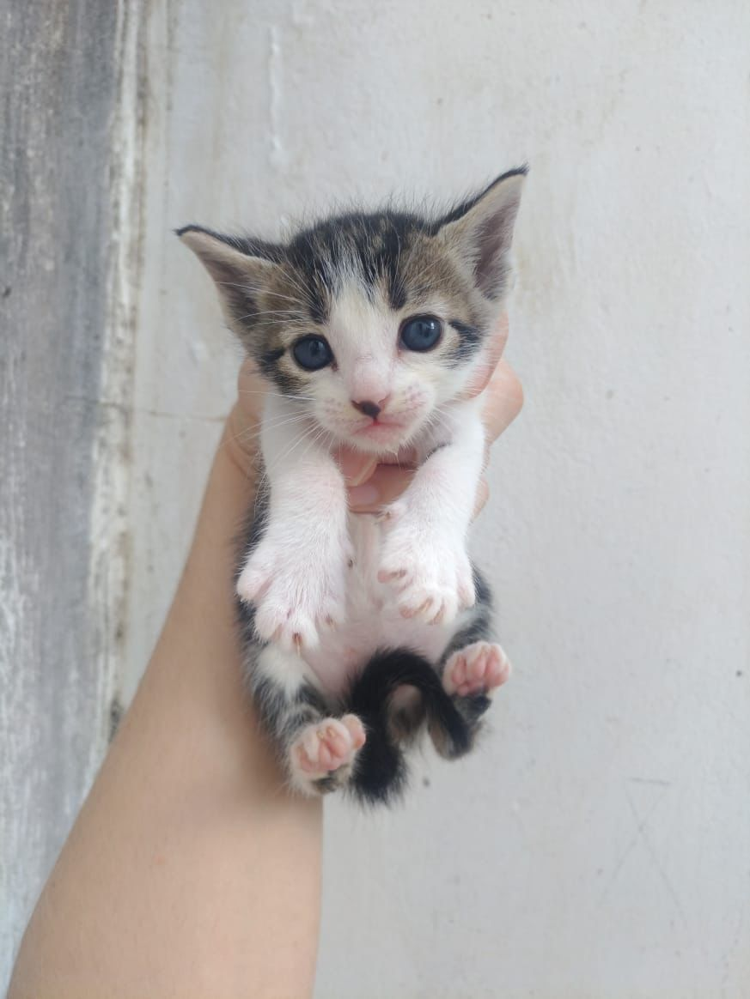
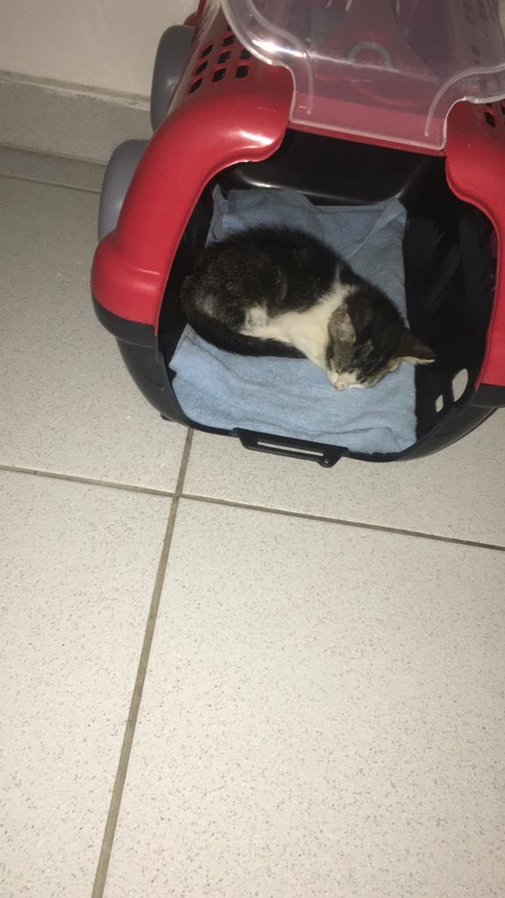
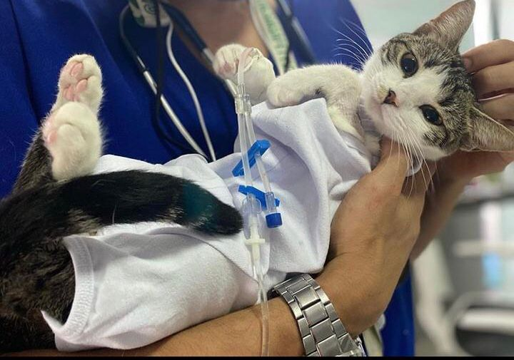

Hello
Hello nasceu em 25/08/19 (eu acho). Filha de Frida, veio de uma ninhada de quatro gatinhos. Infelizmente a jornada de Hello não foi nada fácil, desde pequena começou o sofrimento de viver a vida em pleno sistema capitalista. 🥺
Infância
Seu pai era um jovem desconhecido sem domícilio fixo (tudo é hipótese). Não se sabe sua raça, nem sua pelagem. É mais um que faz o papel de pai da maneira correta.
Frida sempre foi uma aventureira, vive a vida adoiada (certíssima). Um dia aí essa gata aparece grávida e deixa a família humana no desespero 😅.
Após alguns dias (aparentemente a gestação de um gato dura em média 58 - 70 dias), nasce hello e mais seus outros três irmãos 💚.
Juventude
Começa o tempo sombrio, hello tava lá de boas curtindo o quintal da casa de suas humanas e do nada começou a desenvolver algum tipo de irritação na pele, não só nela como em seus irmãos. Inicialmente foi pensando que seria sarna, houveram tentativas pra controlar, mas o negócio ficou pesado e descontrolado totalmente 👀.
Como na época a humana que iria ficar com Hello estava morando em outra cidade, Hello teve sua primeira experiência intermunicipal 🚗. Era na nova cidade que iria começar a luta pra procurar a cura dessa doença infeliz que atormentava a vida de Hello.
Vida adulta
Foi em Feira que começou a corrida contra a doença. Foram inúmeras tentativas, passamos por alguns profissionais e por algumas tentativas de tratamentos. Por fim, chegamos até um especialista em dermatologia animal ( nem sabia que isso existia ) e só aí que Hello teve o diagnóstico correto e começou o tratamento. Hello tinha adquirido um fungo e todas essas tentativas (erradas) fizeram com que tudo se prolongasse e contribuiu para tornar o fungo mais resistente. Foi um período muito ruim, hello ficou muito triste, seus pelos caindo, teve que usar o colar elizabetano e cada vez mais ela ficava mais tristonha. Ainda bem que conseguimos encontrar esse profissional que trouxe o diagnóstico preciso.
Depois de muita luta, muito gastos (é muito caro ter acesso a saúde animal) hello finalmente ficou curada e pôde aproveitar a sua vida de maneira livre (nas fronteiras de dentro de casa). Após esse longo período, ela também fez a castração.
 Hoje hello finalmente segue "curiando" a vida alheia (pelos portões de casa).